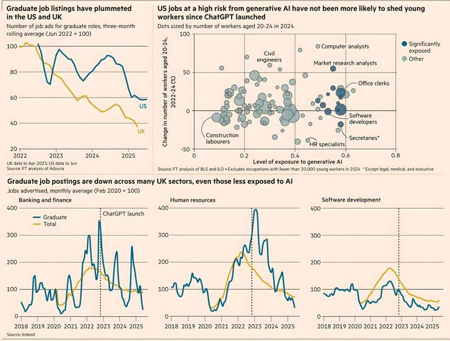

Economic uncertainty and offshoring may fuel the decline in entry-level roles, write Clara Murray and Delphine Strauss
“The rise of ChatGPT made me realise — I’m going to lose my interpreter job,” said Sophia Sheng. After a degree in advanced translation, the 23-year-old is now studying for a masters in management at the University of Manchester, having seen friends in the industry struggle. “I have this fear that someday a lot of jobs are going to be replaced by AI... [That’s] why I chose to shift to a completely new field.”
Many young graduates now share Sheng’s existential fear that AI will gobble up entry-level white-collar positions and put them out of work altogether. Dario Amodei, CEO of AI company Anthropic, warned in May that half of “administrative, managerial and tech jobs for people under 30” could vanish within five years. Big graduate employers such as BT, PwC and Microsoft are cutting jobs, while half of UK companies want to redirect money from staff to AI, according to a BCG survey published in January.
Job postings for entry-level roles requiring a degree have dropped by almost two-thirds in the UK since 2022 — the year ChatGPT launched — twice as much as for all starter roles, according to job search engine Adzuna. In the US, such listings are down 43 per cent over the same period.
Yet while the data points to a tough landscape for new graduates, it also indicates the causes are more nuanced. AI may be part of the picture but other factors, including economic uncertainty, post-Covid retrenchment and offshoring are probably playing an equal or bigger role in falling graduate hiring.
There is so far only tentative evidence in some of the most immediately exposed occupations of AI-related disruption, according to an FT analysis of the latest available data.
Advertisements for graduate-level roles have plunged in several sought-after UK sectors thought to be highly at risk from AI. They were down by 75 per cent in banking and finance, 65 per cent in software development and 54 per cent in accounting in June this year compared with the same month in 2019, according to data from job search site Indeed.
But listings have also fallen sharply in fields identified as being under less acute pressure from generative AI, such as human resources, which was down 77 per cent, and civil engineering, where there had been a 55 per cent drop in openings.
Oliver Nash, associate director at the Institute for the Future of Work (IFOW), said there were “multiple drivers” of the hiring downturn, from the Labour government’s fiscal changes to a decrease in VC funding and a slowdown in the public sector headcount. “Large increases in hiring during Covid, especially in tech... could now be being corrected through a natural process of normalisation,” he added.
Separate analysis by Indeed found only a weak link between occupations where overall postings, including non-graduate roles, fell most, and those where job descriptions had most mentions of AI (suggesting hirers had rapidly adopted the technology).
Pawel Adrjan, director of EMEA economic research at Indeed, said the findings were likely to reflect the tech sector’s particular problems and a broader downturn in the UK jobs market. “Against this backdrop, it’s hard to distinguish any possible subtle impacts of AI.”
Meanwhile, FT analysis of US official data showed there was no clear correlation between an occupation’s potential exposure to generative AI (on an International Labour Organization measure of the tasks susceptible to automation), and whether it lost young workers between 2022 and 2024.
Looking specifically at occupations considered to be at high or moderate risk from generative AI, some graduate roles such as graphic designers and management analysts have thousands fewer workers aged between 20 and 24 than in the year ChatGPT launched. The drop is also noticeable in some highly exposed occupations that are not so popular with graduates, such as insurance claim assessors, credit counsellors and loan interviewers.
But in other graduate sectors, such as accountants and auditors, youth employment was booming as of last year, according to US government statistics — and this holds for many tech sector roles, despite a 2 per cent decline in young people employed in software development.
Other US government data to June 2025 shows that a recent rise in unemployment among young men with college degrees was concentrated in manual sectors such as construction and production, rather than white-collar occupations.
David Autor, professor of economics at MIT, said political turmoil in the US, including whipsawing tariffs, the government slashing its contracts with big consulting firms and cuts by the so-called Department of Government Efficiency (Doge) to scientists and federal workers, were probably having more impact than new technology.
“Outside some specific occupations [such as] programmers, I think it’s premature to ascribe recent labour market woes to AI,” he said.
Karin Kimbrough, chief economist at the professional network LinkedIn, argued that while new technology could play a role, the main driver of a countrywide slowdown in entry-level hiring was the uncertainty over the global economic outlook.
“Paramount... is the uncertain macroeconomic environment. We know from our data that when hiring slows overall, entry level workers feel a bigger impact,” she said.
Recruiters and other intermediaries said another factor was companies stepping up offshoring as they sought to cut costs, and as the growth of remote work made it possible to outsource more complex tasks.
“Most corporates are in a space where offshoring comes before AI,” said Neil Carberry, chief executive of the UK’s Recruitment & Employment Confederation, whose members are seeing businesses move call centre jobs abroad in tandem with the deployment of chatbots.
Kimbrough added that entry-level hiring remained strong in developing economies such as Brazil, Mexico and India.
None of this is likely to reassure graduates under pressure to adopt AI as they enter a workforce where career structures are in flux. Kyle Tan, the 24-year-old founder of Headstart, a UK agency placing student interns with start-ups, said the arrival of AI in a weak economic environment had created “a kind of superstorm” where employers would train fewer graduates and expect more of them.
Others take a more optimistic line, arguing that graduates who have grown up with ChatGPT are well placed to make the most of the new tools and bring new skills to employers. Micha Kaufman, founder of the freelancing platform Fiverr, said Gen Z was driving a surge in UK-based freelancers advertising on the site, which could reflect fewer permanent roles. But he noted that young people were “actively in demand because they are AI natives, meaning they are using AI to compensate for their lack of experience.”
From a client perspective, “you get someone who is not super expensive — and they can already produce more,” he claimed. “There is a case to say that entry level [professionals] are actually going to be in higher demand.”
Some economists warn it is still too early to measure AI’s labour market effects. “We should be wary of dramatic headlines about AI’s impact on hiring,” said Nash of the IFOW. “Not only because it is very hard to parse this from other drivers but also because ‘AI hype’ can itself become a self-generating problem as people think that ‘this is what other businesses are doing.’”
Additional reporting by John Burn-Murdoch and Sarah Lim